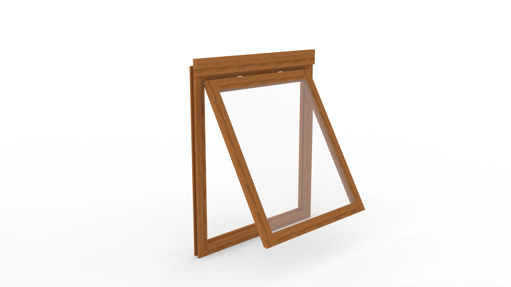
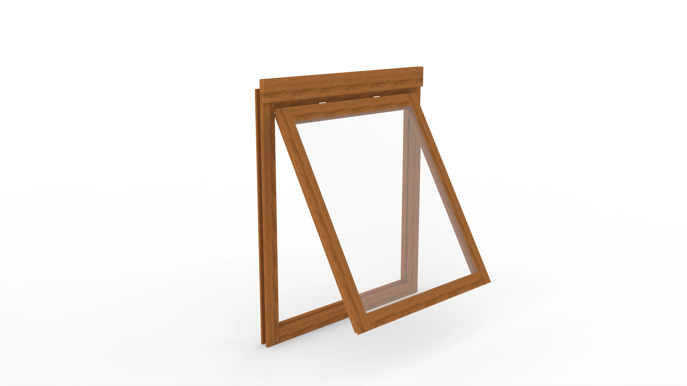

Learning Rhino 3D
As part of my exploration into Rhino 3D, I worked on two projects that sharpened my skills in precision modelling and organization: a detailed log cabin and a replica of a Costa mug.
Key Techniques and Tools
- Precision Modelling: Both projects emphasized the importance of accurate measurements, using Rhino's powerful modelling tools to translate physical objects into digital form.
- Block and Layer Organization: I used blocks to manage reusable components and layers to keep the model organized, allowing for easy adjustments and refinements.
Costa Mug Replica
I replicated a Costa mug from my personal collection, measuring it precisely to the millimetre. I modelled each detail and applied a texture with the Costa logo to match the real mug’s appearance. This project helped me practice texture application and achieve an accurate, realistic representation of an everyday object.
Log Cabin Project
For the log cabin, I carefully measured the structure in my garden to the millimetre and recreated it in Rhino 3D. Using the block system, I efficiently modelled key components like windows, doors, and logs. I created snapshots of both open and closed windows/doors for varied perspectives, enhancing the realism. Textures were applied to the model to simulate the roughness of logs and smoothness of windows, contributing to its visual authenticity.
 

Conclusion
These projects demonstrated my ability to translate real-world objects into 3D models with high precision and efficient workflows, leveraging Rhino's capabilities to maintain both accuracy and creativity.